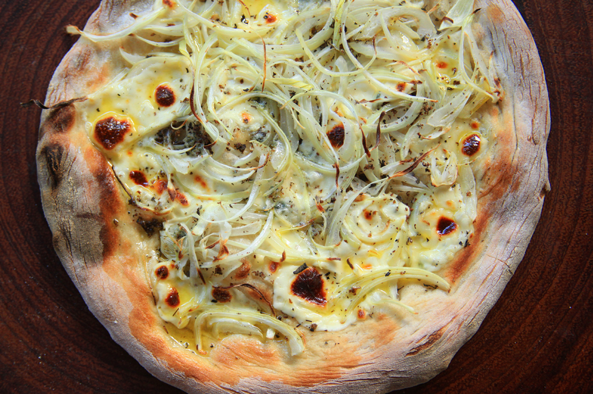

Pizza calabresa
Esta versión, caracterizada por la longaniza y las aceitunas forman una genial combinación

Ingredientes
- 250 gramos de mozzarella fresca
- 500 gramos de cebolla
- 2 cucharadas de orégano
Preparación
- Cortá las cebollas en tiras finas (juliana).
- Colocalas en un bowl con agua fría y dejalas reposar 10 minutos.
- Escurrir las tiras de cebolla y secarlas con un lienzo.
- Colocar la cebolla cobre la pizza precocida sin salsa de tomate. Cubrir con la mozzarella, añadir las aceitunas y hornear a 200º hasta que el queso esté derretido.